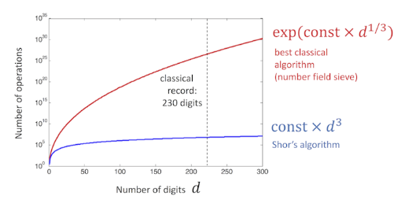
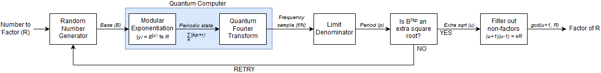
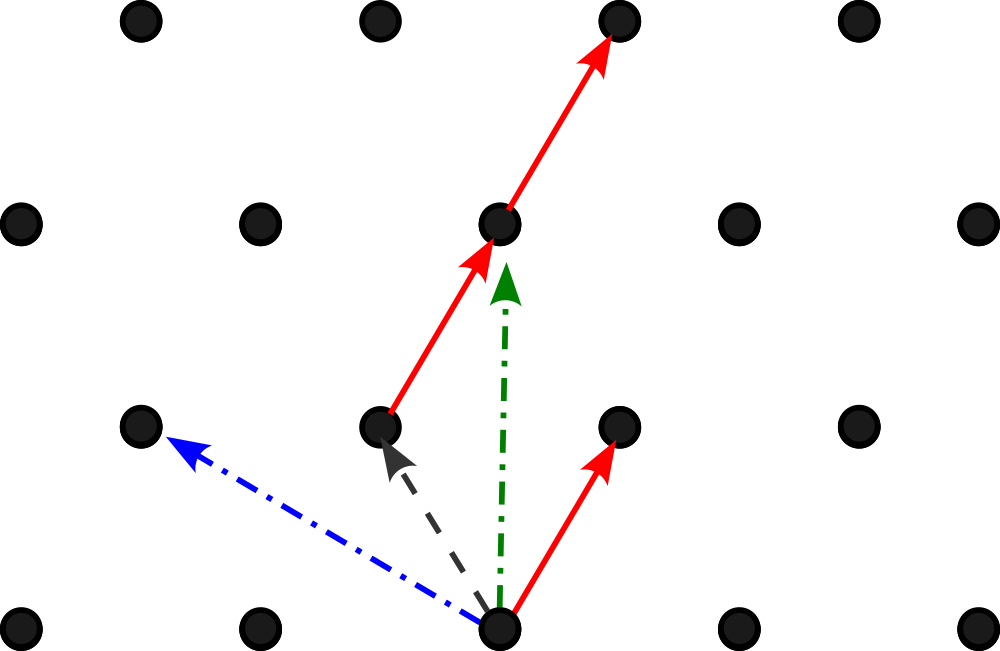
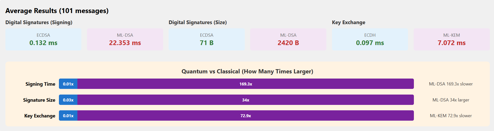
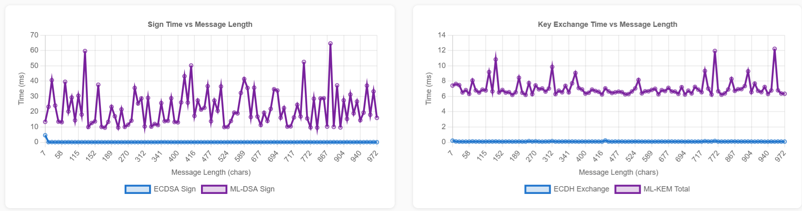
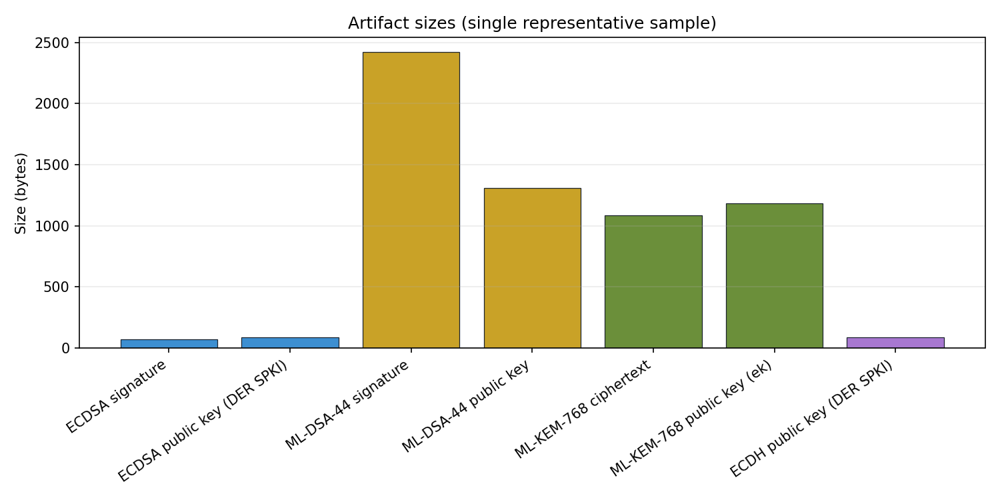
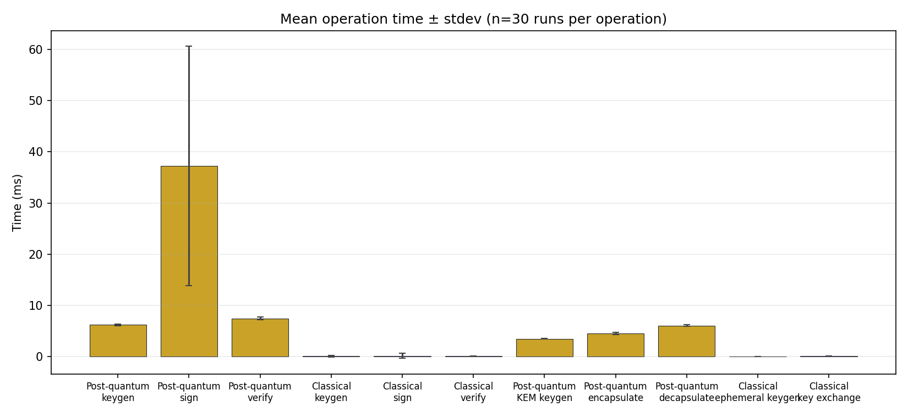
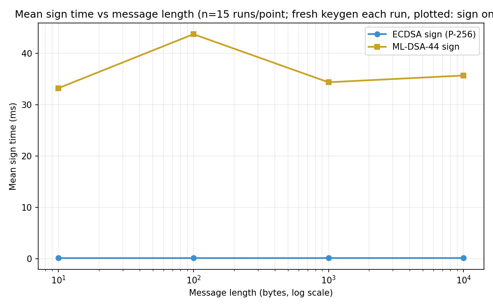

Abstract
Much of modern digital security relies on public-key cryptography — online banking, messaging, and TLS/HTTPS all depend on algorithms whose security rests on hard mathematical problems. These classical approaches are vulnerable to future quantum computers, which could break them far faster than today's machines.
We implemented two classical algorithms — Elliptic Curve Digital Signature Algorithm (ECDSA) and Elliptic Curve Diffie-Hellman (ECDH) on the P-256 curve — alongside their post-quantum counterparts recently standardized by NIST: ML-DSA-44 for digital signatures and ML-KEM-768 for secure key exchange. A Python-based web application allows interactive side-by-side comparison and supports uploading a CSV list of messages for batch testing. Results are displayed as raw data and charts.
Objective: Demonstrate the performance differences between classical public-key cryptography and post-quantum cryptography. By design, PQC requires substantially more computational resources and produces larger artifacts — a tradeoff we quantify through controlled benchmarks and real message batches.
Introduction
Quantum computers pose an existential threat to cryptography as we know it today.
- Even now, attackers are gathering encrypted data to decrypt once quantum computers become mainstream — a strategy known as "Harvest Now, Decrypt Later."
- Current asymmetric standards (RSA, ECC) rely on integer factorization and discrete logarithm problems, both compromised by quantum machines running Shor's algorithm.
- Post-Quantum Cryptography (PQC) offers quantum-resistant alternatives based on different mathematical assumptions — primarily hard lattice problems.
This project examines the performance differences between classic and post-quantum cryptography through hands-on implementation, not just theory.
Shor's Algorithm — Why Classical Crypto Breaks
Developed by Peter Shor in 1994, Shor's algorithm remains one of the only quantum algorithms that achieves exponential speedup over classical computing for problems central to cryptography. It describes a mechanism by which quantum computers can find prime factors and discrete logarithms far more efficiently than classical machines.


Classical Cryptography
Overview
- Asymmetric (Public-Key): RSA, DSA, ECDSA, ECDH
- Security basis: Integer factorization and discrete logarithm problems
- Role: Foundation of modern TLS/HTTPS infrastructure
- Quantum vulnerability: Represents a fundamental architectural risk
- Symmetric crypto (AES, ChaCha20): Not vulnerable to Shor's algorithm — PQC deployment typically hybridizes asymmetric PQC with efficient symmetric encryption
Algorithms Used in This Project
ECDSA (P-256)
Dominant standard for TLS certificates, cryptocurrencies, and mobile platforms. Implemented via Python cryptography library (FIPS 186-4 / NIST SP 800-186).
ECDH (P-256)
Foundation of the TLS 1.3 handshake. Two parties exchange public keys and independently derive a shared secret — no ciphertext is produced (unlike ML-KEM).
Post-Quantum Cryptography
Algorithms Used in This Project
ML-DSA-44
Module-Lattice Digital Signature Algorithm. NIST finalized FIPS 204 in August 2024 as the primary standard for quantum-resistant digital signatures. Implemented via dilithium-py.
ML-KEM-768
Module-Lattice Key Encapsulation Mechanism. Key exchange calculates a shared secret collaboratively; KEM generates a secret on one side and encapsulates (encrypts) it using the recipient's public key. Implemented via kyber-py.
Lattice-Based Security
Post-quantum cryptography is based on hard lattice problems believed resistant to quantum attack. A lattice is an infinite grid of points in high-dimensional space. Security relies on problems like the Shortest Vector Problem (SVP) — finding the shortest non-zero vector in a lattice. "Noise" in ML-DSA/ML-KEM schemes means values sit slightly off exact lattice points, making recovery hard.

Methods & Implementation
Research Foundation
We studied NIST standards for both classical and post-quantum encryption: SP 800-56A for key agreement, SP 800-186 for approved curves, FIPS 204 (ML-DSA), and FIPS 203 (ML-KEM). Comparative analysis was informed by Scrivano's survey of classical vs. post-quantum algorithms in the quantum computing era.
Toolchain
- Web application (
encryptionCompare_v1.py) — Flask server with browser UI for live comparison; supports CSV batch upload of messages - Offline benchmarks (
benchmark.py) — Reproducible timing and size measurements with CSV exports and matplotlib figures - Libraries:
cryptography(ECDSA/ECDH),dilithium-py(ML-DSA-44),kyber-py(ML-KEM-768)
Measurement Protocol
- Reproducible benchmark: N = 30 runs per operation; fresh key generation each round unless noted
- Batch test (poster): 101 messages of varying length uploaded via CSV; averaged for dashboard results
- Artifact sizes: Measured in bytes and bits from one representative key generation (sizes are fixed by the algorithm)
- ML-KEM note: Ciphertext is the principal on-wire output; shared secret is recovered by decapsulation. Ciphertext is base64-encoded in the UI because it is binary data.
Results
Poster Summary — 101 Message Batch Average
Using the web application's CSV upload feature, we encrypted and compared 101 messages. The dashboard below shows the aggregate performance gap between classical and post-quantum algorithms.


Table I — Digital Signatures (30-run benchmark)
| Algorithm | Operation | Mean (ms) | Std dev | N |
|---|---|---|---|---|
| ML-DSA-44 | Key pair generation | 6.23 | 0.18 | 30 |
| ML-DSA-44 | Sign message | 37.20 | 23.36 | 30 |
| ML-DSA-44 | Verify signature | 7.49 | 0.24 | 30 |
| ECDSA (P-256) | Key pair generation | 0.12 | 0.19 | 30 |
| ECDSA (P-256) | Sign message | 0.19 | 0.48 | 30 |
| ECDSA (P-256) | Verify signature | 0.11 | 0.01 | 30 |
Table II — Key Agreement (30-run benchmark)
| Algorithm | Operation | Mean (ms) | Std dev | N |
|---|---|---|---|---|
| ML-KEM-768 | Key pair generation | 3.52 | 0.09 | 30 |
| ML-KEM-768 | Encapsulate (ciphertext) | 4.55 | 0.20 | 30 |
| ML-KEM-768 | Decapsulate (shared secret) | 6.09 | 0.17 | 30 |
| ECDH (P-256) | Ephemeral key generation | 0.03 | 0.001 | 30 |
| ECDH (P-256) | Derive shared secret | 0.12 | 0.02 | 30 |
Table III — Artifact Sizes
| Algorithm | Output | Bytes | Bits | Note |
|---|---|---|---|---|
| ECDSA (P-256) | Signature | 72 | 576 | Signature object, not message length |
| ECDSA (P-256) | Public key | 91 | 728 | DER-encoded |
| ML-DSA-44 | Signature | 2,420 | 19,360 | Lattice signature |
| ML-DSA-44 | Public key | 1,312 | 10,496 | Lattice public key |
| ML-KEM-768 | Ciphertext | 1,088 | 8,704 | Encapsulation output |
| ML-KEM-768 | Public key (ek) | 1,184 | 9,472 | Encapsulation key |
| ECDH (P-256) | Peer public key | 91 | 728 | No KEM ciphertext |
Automated Benchmark Figures



Interpretation
- Post-quantum signatures and KEM material are much larger than classical elliptic-curve artifacts — matching the ~35× size increase cited in our presentation.
- Sign, verify, encapsulation, and decapsulation take longer on classical CPU using Python PQC libraries — consistent with stronger quantum-resistant parameters.
- Post-quantum encryption consumes roughly 40× more resources than classical for equivalent operations; at scale this becomes substantial.
- Exact milliseconds vary by machine and load; our figures document the measurement environment for reproducibility.
Web Demo
Our Flask web application (encryptionCompare_v1.py) provides a browser interface for
interactive side-by-side comparison. Users enter a text message (or upload a CSV of messages) and run:
- Signature comparison: ECDSA P-256 vs ML-DSA-44 — sign and verify with timing and size reporting
- Key agreement comparison: ECDH P-256 vs ML-KEM-768 — encapsulation/decapsulation vs ephemeral key exchange
The UI reports times in milliseconds and artifact sizes in bytes and bits. Ciphertext and binary keys are base64-encoded for safe display in HTML. Fresh key material is generated per request.
python encryptionCompare_v1.py → open http://127.0.0.1:5000.
This is a development/demo server — not intended for production deployment.
Implementation Challenges
- PQC certificates are approximately 40× larger than classical (~160 KB vs ~4 KB for a typical chain)
- Network overhead directly impacts TLS handshake latency
- Backward compatibility requirements complicate migration paths
- Risk of user abandonment if perceived performance degrades
As PQC is deployed publicly, performance improvements must be found. The main security threat may not be the algorithm itself — but frustrated users who turn PQC off because it feels too slow, leaving themselves vulnerable.
Industry Solutions & Adoption
- Merkle Tree Certificates (MTCs): Efficient verification of large certificate sets using compact proofs instead of full serialized chains
- Google's Quantum-Resistant Root Store: ML-DSA integrated into Chrome; forgery requires breaking both classical and PQC assumptions
- Cloudflare pilot: ~1,000 PQC-enabled certificates deployed in testing
- Hybrid key exchange: Immediate quantum resistance by combining classical and PQC algorithms during the transition
- Google Chrome: ML-KEM (PQC) enabled by default for TLS 1.3
- Certificate Authorities preparing for full PQC certificate generation
Google reports squeezing ~15 KB of quantum-resistant certificate data into ~700 bytes using Merkle tree techniques — demonstrating that clever engineering can mitigate the bandwidth penalty, but the underlying computational cost remains.
Security Analysis
- Defense in depth: An attacker must compromise BOTH classical AND post-quantum layers in hybrid deployments
- Harvest Now, Decrypt Later: Data encrypted today with ECDSA/ECDH-only systems may be readable once quantum computers mature
- Lattice assumptions: Believed to resist all known quantum algorithms — no Shor-equivalent attack is known
- Transition timeline: Projected 10–15 years for full adoption; hybrid systems provide transitional protection now
Conclusion & Future Work
- PQC is essential for long-term cryptographic security as quantum computing advances.
- We measured a clear tradeoff: ~35× larger artifacts and 10–170× slower operations depending on the workload.
- Real-world deployment is accelerating — Google, Cloudflare, and NIST are actively moving PQC into production.
- A hybrid approach (classical + PQC) provides immediate protection during the multi-year transition.
- Proactive adoption is necessary to protect sensitive data against future "Harvest Now, Decrypt Later" attacks.
- Future work: Benchmark larger message corpora, align key-encapsulation timing protocol with production TLS flows, and explore performance optimizations as the ecosystem matures.
Project developed as part of CSIT 567/697 at Montclair State University, Computational Sensing Laboratory.
References & Acknowledgments
- [1] A. Scrivano, "A Comparative Study of Classical and Post-Quantum Cryptographic Algorithms in the Era of Quantum Computing," arXiv:2508.00832, 2025. arxiv.org/abs/2508.00832
- [2] NIST, Digital Signature Standard (DSS), FIPS PUB 186-4. doi:10.6028/NIST.FIPS.186-4
- [3] NIST, Module-Lattice-Based Digital Signature Standard, FIPS PUB 204, Aug. 2024. doi:10.6028/NIST.FIPS.204
- [4] NIST, Module-Lattice-Based Key-Encapsulation Mechanism Standard, FIPS PUB 203. doi:10.6028/NIST.FIPS.203
- [5] Google, "Post-Quantum Cryptography: Standards and Progress," Google Online Security Blog, Aug. 2024. security.googleblog.com
- [6] D. Goodin, "Google quantum-proofs HTTPS by squeezing 15kB of data into 700-byte space," Ars Technica, Feb. 2026. arstechnica.com
Acknowledgments: Faculty mentor Stefan A. Robila, Computational Sensing Laboratory,
Montclair State University. Benchmark data collected using dilithium-py and kyber-py libraries.